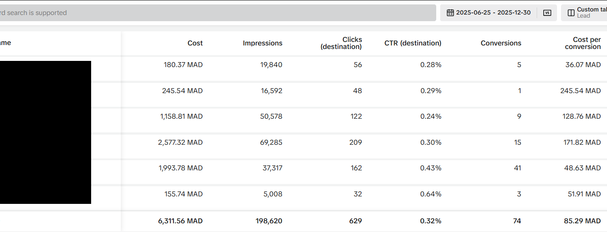

Forex Lead Generation – GCC (TikTok Ads)
TikTok lead campaigns for a Forex broker targeting GCC countries, combining short educational creatives with strong Arabic CTAs to capture high‑intent leads at around 5 USD CPL.


Campaign Overview
Objective: Generate a steady flow of Forex leads from TikTok for a GCC-focused broker, using short-form video and ideas that match TikTok user behavior.
Markets & audience: Gulf countries: KSA, UAE, Qatar, Kuwait, Bahrain, Oman. Young adults 21–45 interested in trading, Forex, investing and side income. Custom audiences from landing page visitors and lead forms, plus Lookalikes from good customers and leads.
Strategy & Setup
Account structure:
- Lead Generation campaigns with Ad groups per country or clusters (e.g. KSA + UAE) to control budget and CPL.
- Optimization on Leads with event tracking via TikTok Pixel / Events API.
Creatives & messaging:
- 15–25 second short videos with strong hooks: "How to start trading from your phone?", "Simple way to begin Forex", "Trade with a licensed broker".
- Mix of UGC-style (screen recordings, simple motion) and light motion graphics.
- Clear Arabic CTAs: "Register now", "Request free call".
Optimization approach:
- Continuous testing of hooks, first 3 seconds, thumbnails and different angles.
- Stopping high-CPL Ad groups and reallocating budget to best-performing countries/creatives.
- Monitoring sales team quality feedback to ensure leads are not just cheap but also convertible.
Results Snapshot
- Total spend: around 1,865 USD on TikTok Ads.
- Total leads: more than 380 Forex leads from GCC countries.
- Average CPL: around 5 USD per lead.
- Delivery: Strong reach and impressions within the target age group, supporting brand awareness alongside lead generation.
These TikTok campaigns delivered 380+ Forex leads from GCC markets at an average cost of around 5 USD per lead, proving TikTok as a profitable additional channel next to Meta for this broker.
Key Learnings
- UGC/realistic content outperformed heavy motion or formal ads in CTR and CPL.
- "Education + simple start" hooks delivered better lead quality than quick-profit promises.
- Country splitting in Ad groups allowed quick budget shifts to KSA and UAE when they showed the best volume/CPL mix.
My Role
- Full TikTok strategy setup for Forex in GCC (campaign structure, countries, budgets).
- Video script writing, production coordination and creative uploads to the account.
- Daily optimization of bids, budgets, audiences and creatives, with clear client reports on spend, leads and CPL.